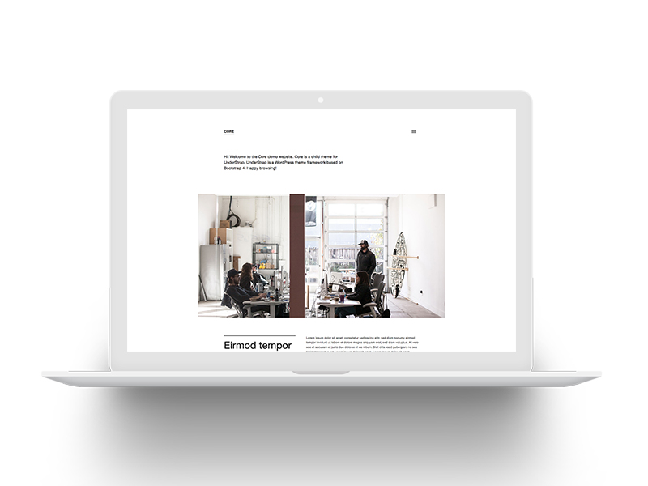
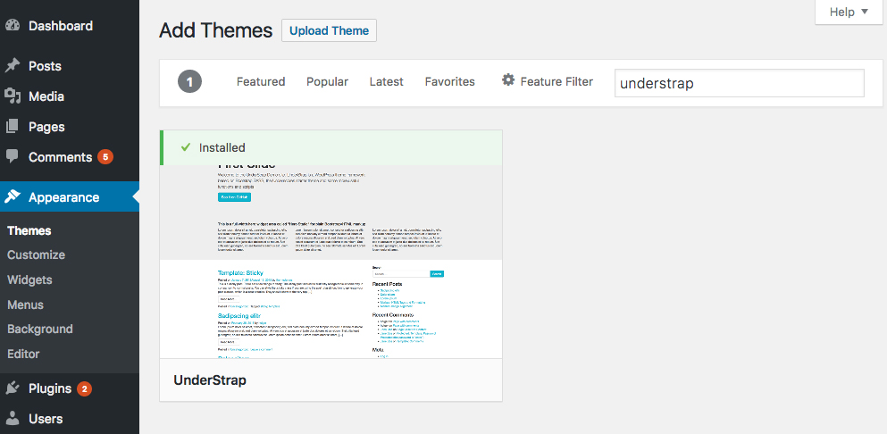
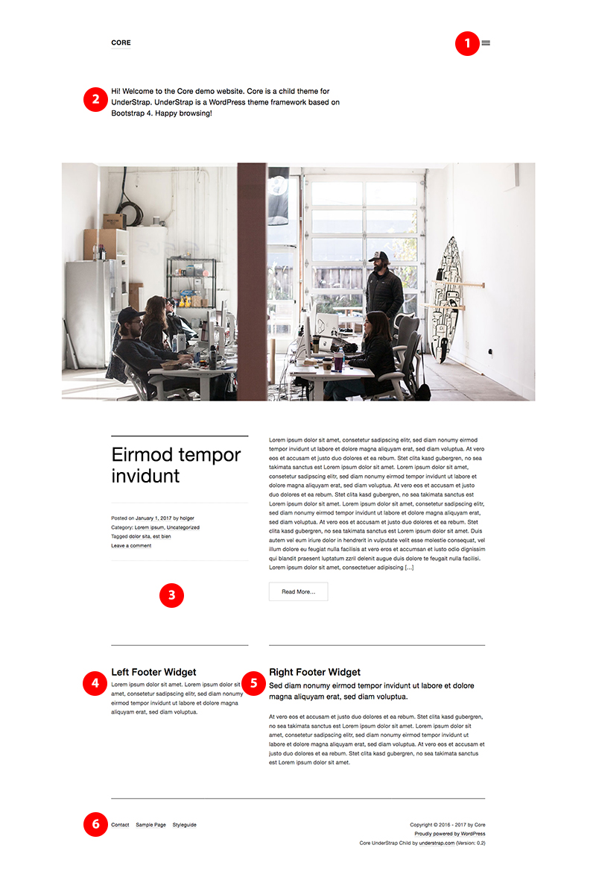

About Core & UnderStrap
Core is a clean, minimalistic and lightweight blogging theme for WordPress. It is a child theme made for UnderStrap, a solid also clean theme framework.
Thanks for buying it!
Some more words about UnderStrap: UnderStrap is a open source WordPress theme framework. It based on Bootstrap 4 and the starter theme Underscores. All glued together by npm, Gulp and Sass. And Core is a child theme for it.
To use Core you have to install UnderStrap first. But no fear: Its a free and open source framework available with one click from your WordPress admin area.
Changelog
- 1.0 Jan. 7th 2017 - Initial stable release
Install UnderStrap first
To use the child theme Core you have to install UnderStrap, the parent framework, first.
There are three (common) ways to install UnderStrap: Via WordPress theme installer or manually via ZIP upload.
1. Installation via WordPress theme installer
UnderStrap is available via wordpress.org. Means you can install it from your WordPress backend as any other theme, too.

Click on Appearance -> Themes in your WordPress backend, hit the "Add New" button and search for "UnderStrap". Hit the "install" button and wait a moment. UnderStrap will be installed on your server.
2. Installation via Upload
UnderStrap is available as .zip archive at UnderStrap.com. Download it and store it on your local HDD.
Open your WordPress backend and click on Appearance -> Themes, hit the "Add New" button followed by the "Upload Theme" button.
Select the previously stored .zip file from your HDD and upload it. The WordPres install routine will run automatically right after it.
3. Manually via SFTP
Follow step 2 but extract the freshly downloaded understrap.zip file on your local HDD. Now connect via SFTP to your server, browse to the /wp-content/themes directory of your WordPress installation and upload the /understrap folder to it.
Now install and activate Core
After installing the parent theme first it is time to install Core.
1. Installation via Upload
After purchasing Core you received a .zip file (via email and/or download) called core-understrap.zip. Store it on your local HDD.
now open your WordPress backend and click on Appearance -> Themes, hit the "Add New" button followed by the "Upload Theme" button.
Select the previously stored .zip file from your HDD and upload it.
Now activate Core: Go again to Appearance -> Themes and hit the "Activate" button below the Core screenshot.
2. Manually via SFTP
Follow step 1 but extract the freshly downloaded core-understrap.zip file on your local HDD. Now connect via SFTP to your server, browse to the /wp-content/themes directory of your WordPress installation and upload the /understrap folder to it.
Now activate Core: Go again to Appearance -> Themes and hit the "Activate" button below the Core screenshot.
Widgets & Menus
Core comes with just a few widget ares and menus. Learn more about what appears where here.

- Off Canvas Widget Area & Primary Menu - Includes the "Primary Menu" and the "Off Canvas" Widget area
- Hero Static Widget Area - Appears only on your frontpage. Good for a welcome message or for some kind of a stage
- Sidebar Widget Area - Anything below the title and its meta informations. Appears on the left hand side of single pages and single articles.
- Left Footer Widget Area - Smaller left footer widget area. Takes 1/3 of the footers space
- Right Footer Widget Area - Bigger right footer widget area. Takes 2/3 of the footers space
- Footer Menu - Holds a menu called "Footer Menu". If no menu is assigned here the theme renders the main pages.
Developing with npm & Gulp
Core uses npm as manager for dependency packages like Bootstrap and UnderStrap. And it uses Gulp as taskrunner, for example to compile .scss code into .css, minify .js code etc. The following chapter describes the usage and workflow.
Installing dependencies
- Make sure you have installed Node.js and Browser-Sync* (* optional, if you wanna use it) on your computer globally
- Then open your terminal and browse to the location of your Core copy
- Run:
$ npm install
Running
To work and compile your Sass files on the fly start:
Or, to run with Browser-Sync:
- First change the browser-sync options to reflect your environment in the file
/gulpfile.js in the beginning of the file:
var browserSyncOptions = {
proxy: "localhost/theme_test/", // <----- CHANGE HERE
notify: false
};
- Replace
localhost/theme_test/ with the URL to your local WordPress test environment.
For example if you run MAMP and your WordPress installation is placed in a htdocs subfolder called /understrap you have to add localhost:8888/core. Its the same URL you have to type in to see your local WordPress installation.
- then run:
$ gulp watch-bs
Support for:
Core Child Theme
Any questions, problems, issues, requests or just wanna chat?
Send me an email to:
hello {at} understrap.com
UnderStrap Parent Theme
General UnderStrap questions or problems?
Open an issue on Github
License
UnderStrap & Core is released under the terms of the GPL version 2 or (at your option) any later version.
http://www.gnu.org/licenses/old-licenses/gpl-2.0.en.html
Credits